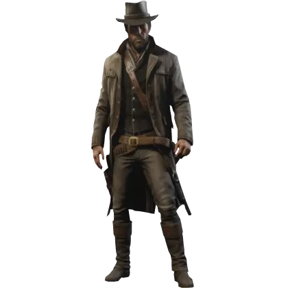
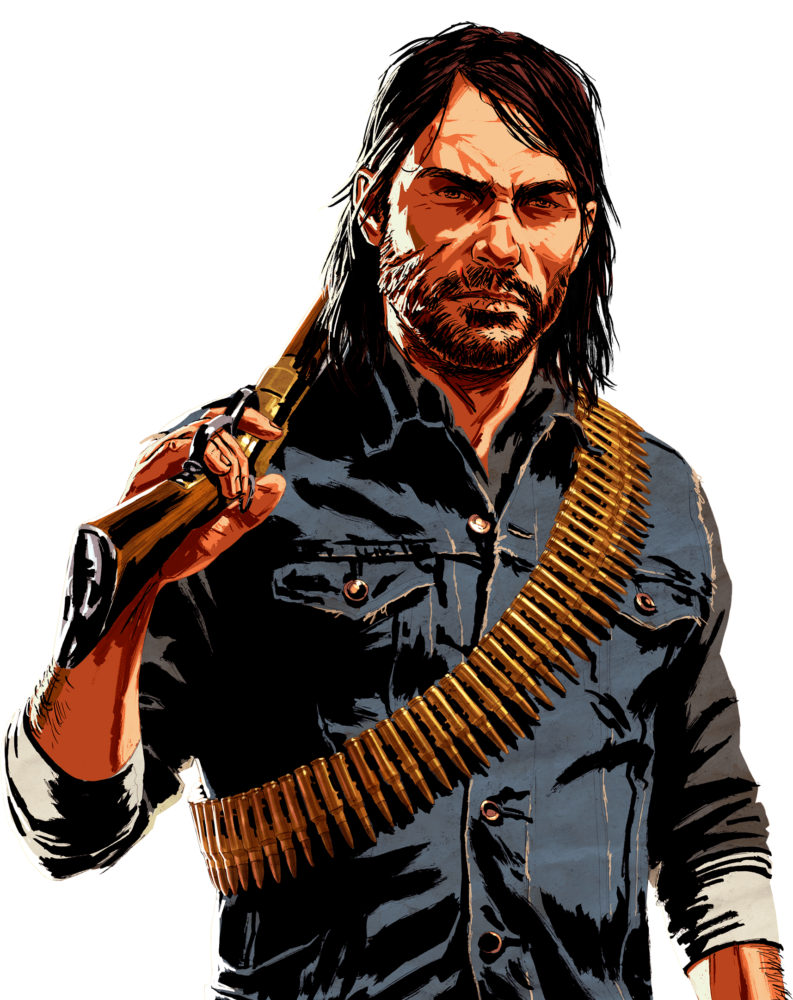

RED DEAD REDEMPTION 2


Red Dead Redemption 2 is an action-adventure game developed and published by Rockstar Games. It is the third entry in the Red Dead series and a prequel to the 2010 game Red Dead Redemption. The game is set in a fictionalized representation of the Western, Midwestern, and Southern United States in 1899 and follows outlaw Arthur Morgan, a member of the Van der Linde gang. Players complete missions—linear scenarios with set objectives—to progress through the story. Outside of missions, players may freely roam the open world. The Best part of the game is that it has a very good story and the graphics are amazing. The game is set in a fictionalized representation of the Western, Midwestern, and Southern parts of the United States in 1899. Players complete missions—linear scenarios with set objectives—to progress through the story. Outside of missions, players may freely roam the open world. Its a 10/10 masterpiece and I dont think any other game can top this. The amount of content that is present in this game that is not even related to the main story line can be used to make another story game and these side missions or interactions with npc they are something that adds meaning to this game. The story , the cinematics and the music everything is top notch. Overall, It is the Goat of gaming history
